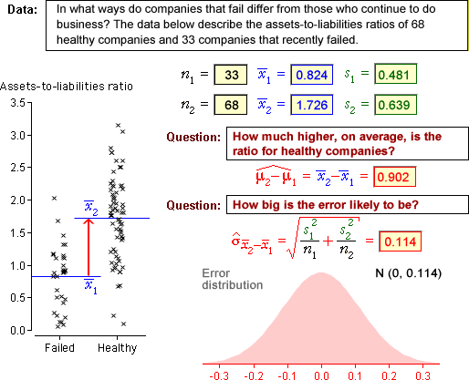

These examples show how to calculate the standard error and approximate distribution of the error when estimating µ2 - µ1 using  .
.
The error distribution gives a reasonable idea
of how far  is likely to be from µ2 - µ1
is likely to be from µ2 - µ1
Examples

These examples show how to calculate the standard error and approximate distribution of the error when estimating µ2 - µ1 using  .
.
The error distribution gives a reasonable idea
of how far  is likely to be from µ2 - µ1
is likely to be from µ2 - µ1
The data sets are described in the questions.